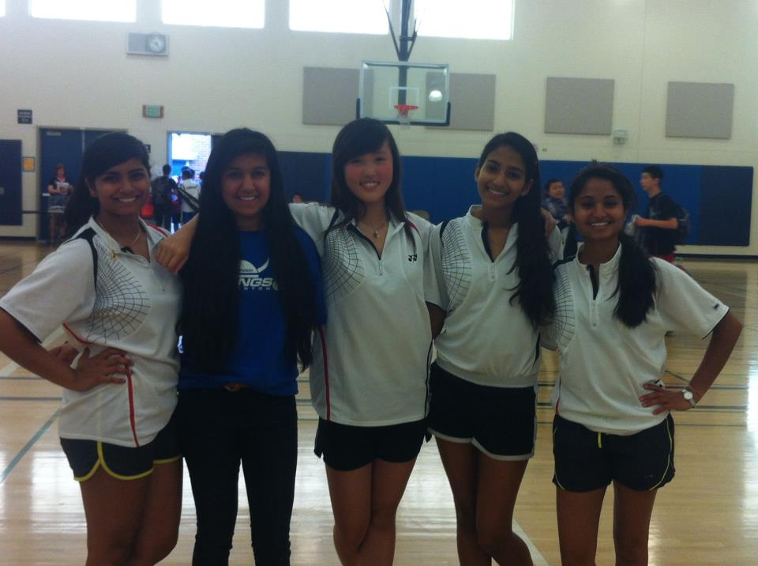

|

|
I played Badminton, Girls Doubles and Singles, which served as an outlet. It was a way for me to relax and take a break from the monotony of school, learning valuable collaboration skills at the same time as I had to adjust to playing with different partners. |